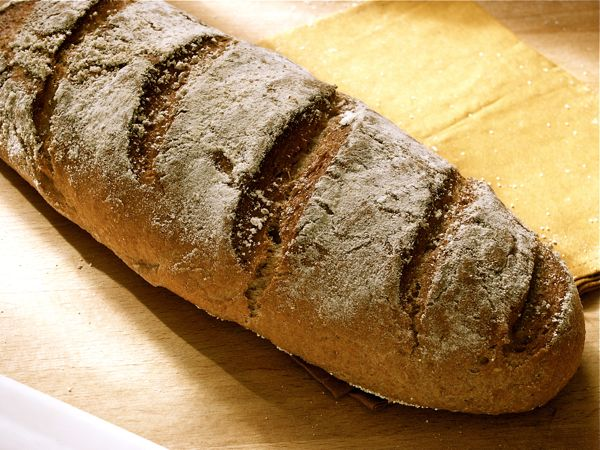

Elaboración del pan
¡Bienvenidos a nuestra panadería! Para crear el pan artesanal perfecto en casa, solo necesitas ingredientes seleccionados, paciencia y mucho amor. Combinamos la mejor harina de trigo con agua pura, levadura y un toque de sal para dar vida a una masa madre que dejamos reposar sin prisa, permitiendo que desarrolle aromas y texturas inigualables. Tras un amasado tradicional a mano, cada pieza entra al horno de piedra para salir con una corteza dorada y crujiente y una miga increíblemente esponjosa que llenará tu hogar con el irresistible olor a pan recién horneado.
Panadería
En esta sección, encontrarás todos nuestros panes.
Pan de espelta tradicional
Ya os he hablado de la harina de espelta y sus beneficios para nuestra salud. Además de ser sana, la harina de espelta nos permite preparar panes integrales de una textura asombrosa, muy parecidos a los panes tradicionales.
Ingredientes
- Harina de espelta
- Agua
- Levadura
- Sal
- Aceite de oliva
Elaboración
Mezcla la harina de espelta con la sal y añade el agua tibia con la levadura. Amasa durante 10-15 minutos hasta obtener una masa lisa y elástica. Déjala fermentar unos 45-60 minutos hasta que duplique su tamaño. Después, vuelve a amasar, dale forma y deja reposar otros 30-40 minutos. Finalmente, hornea a 200 ºC durante unos 30-40 minutos, hasta que el pan esté dorado y suene hueco al golpear la base.

Pastelería-bollería
En esta sección, encontrarás todos nuestros pasteles y nuestra bollería.
Empanadas
En esta sección, encontrarás todas nuestras empanadas.